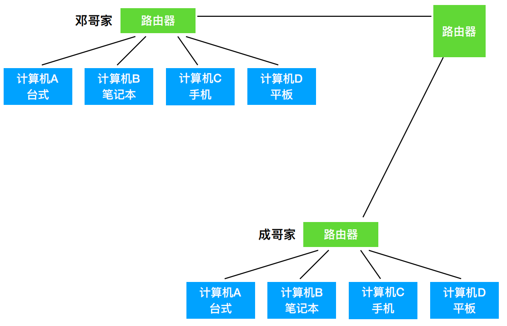
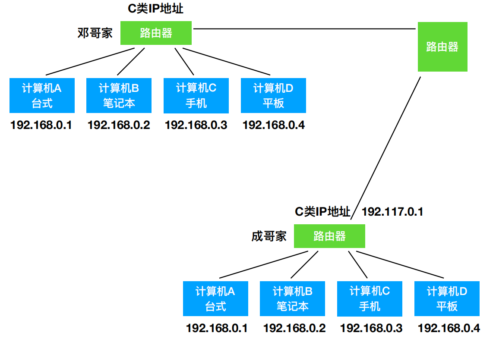
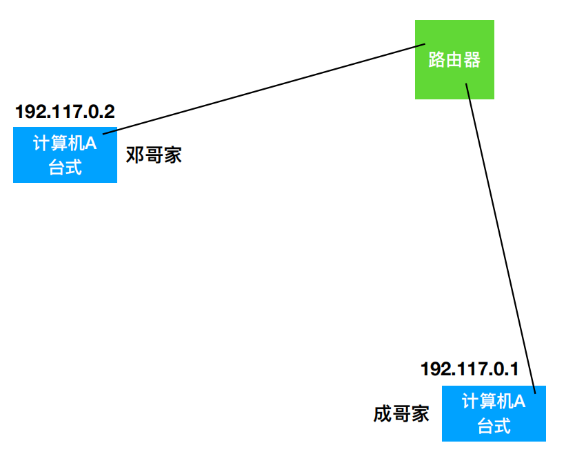
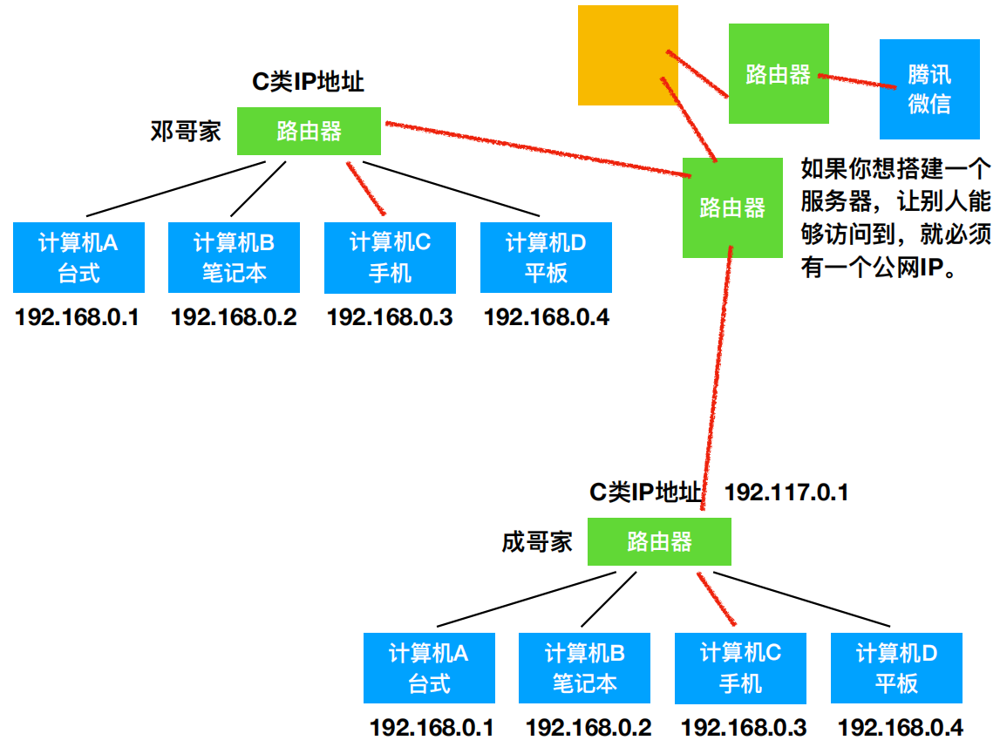

一、IP地址
IP地址的格式：IP地址分为四个段：xxx.xxx.xxx.xxx，每个段0~255，每个段，都是由8个0、1组成的。
⼀个IP地址分为两个部分：⽹络ID（前3位），主机ID（后9位），表示这个机器是第几个网络的第几个机器
IP地址的分类：ABC三类是根据可容纳机器的数量划分的，A > B > C
A类：0.0.0.0 ~ 127.255.255.255（⼀个⽹络能有1600+万台）
B类：128.0.0.0 ~ 191.255.255.255（172.16.0.0 ~ 172.31.255.255）
C类：192.0.0.0 ~ 223.255.255.255（私有网络：192.168.xxx.xxx）
D类：（多播地址）
E类：
- 要将两个局域网联通，先将两个局域网的路由器连接到一个路由器上，但是成哥还是接收不到邓哥用电脑发的微信，为什么？
原因： 家里机器的IP地址是路由器给的，格式为192.168.xxx.xxx，是私有网络，用局域网A的机器直接访问局域网B的机器的IP地址，会让自己家的路由器认为你访问的是自己家的另一台计算机，也就是说信息根本就出不去这个私有网络，所以你需要一个公网IP
举例： 假设成哥家路由器是公网IP，那么邓哥家计算机A可以通过访问成哥家路由器IP，进而访问到成哥家的计算机


- 以前互联网刚兴起的时候，电脑直接插着网线，所以相当于电脑直接连接路由器，这个时候两台计算机分配的都是公网地址，邓哥家计算机可以直接访问成哥家计算机

- 如果你想搭建一个服务器，让别人能够访问到，就必须有一个公网IP
- 举例：邓哥给成哥发发一条微信消息
